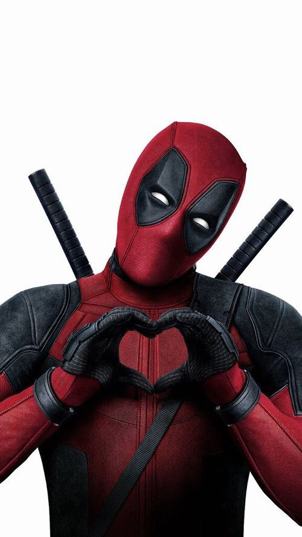
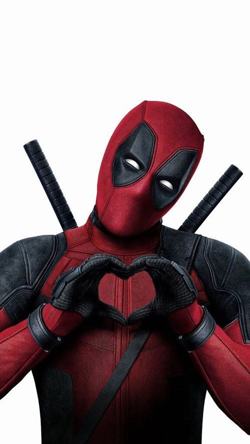

Marvel supes
Ladies and gentlemen, boys and girls, gather round because today we're diving headfirst into the world of capes, masks, and underpants on the outside – yes, you guessed it, we're talking about those mythical creatures, those extraordinary beings, those folks who are the human embodiment of your wildest dreams and the solution to every fictional city's crime problem. Hold onto your utility belts, because we're about to embark on a hilarious journey into the fantastic realm of SUPERHEROES! These larger-than-life characters, with powers that make even your grandma's secret meatloaf recipe seem mundane, are here to save the day, right after they've made sure their hair looks fabulous, of course. They swoop in with impeccable timing, always having just enough time to strike a pose before vanquishing the villain. Honestly, have you ever seen a superhero miss their cue? I haven't, and I've binge-watched every superhero show ever made! But what exactly makes someone a superhero? Is it the ability to wear spandex without feeling self-conscious? Or is it the undying commitment to justice, no matter how many skyscrapers you accidentally obliterate in the process? We'll explore that and more as we delve into the outrageous, sometimes downright absurd world of these costume-clad champions. Get ready for a side-splitting adventure as we uncover the quirkiest, most amusing, and occasionally baffling aspects of superheroes and their incredible escapades. From radioactive spider bites to gamma radiation-induced tantrums, these heroes have shown us that even in the craziest of circumstances, you can always find time for a one-liner and a pose.
He's Not Your Friendly Neighborhood Spider-Man
.jpg) 

Ladies and gentlemen, prepare yourselves for the most outrageously hilarious, fourth-wall-breaking, spandex-clad, and slightly unhinged anti-hero to ever grace the pages of comic books and the silver screen: Deadpool! Picture this - if a stand-up comedian and a ninja had a wild, lovechild, it'd be this guy. With a face only a mother could love (if she had a great sense of humor), Deadpool is the Merc with a Mouth, known for his incessant chatter, pop culture references, and a penchant for breaking the fourth wall so often that he's on a first-name basis with the audience. Whether he's wielding katanas, cracking jokes, or simply trying to figure out what the heck is going on in his own chaotic universe, Deadpool is a character that's equal parts awesome and absurd. So, buckle up and get ready for a raucous ride through the zaniest corners of the superhero world with the one and only, Deadpool!